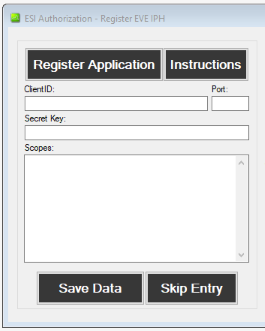
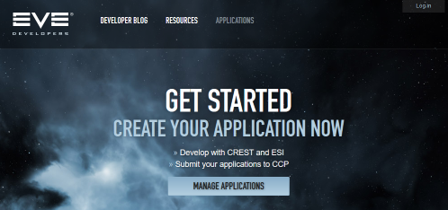
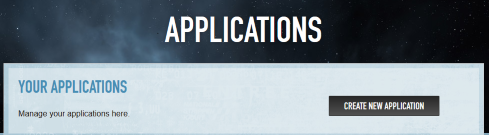
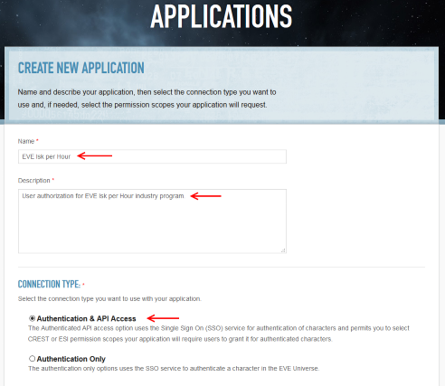
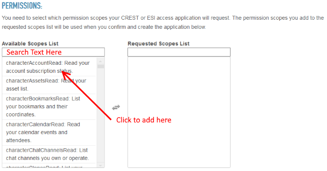
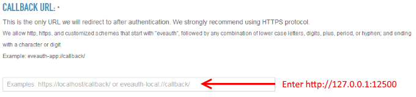
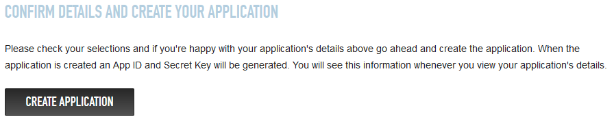
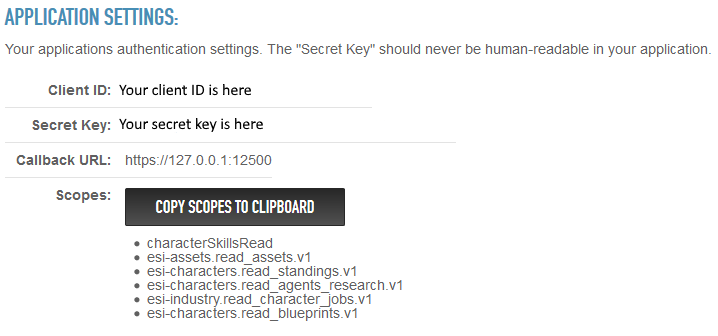

EVE Isk per Hour - Application Registration Instructions
To use EVE IPH to its fullest potential, you must authorize
the application to view your characters' details through CCP's Single
Sign On (SSO) Authentication system, called EVE Swagger Interface
(ESI). Through the Autheticated API access option, this sytem allows
IPH to access your selected permission scopes to read things like your
character's assets, skills, and blueprints. This process also ensures
that you have control of access to your character API and you can
remove that access at any time. Additionally, to keep your information
secure as possible, any information about this application is available
to only you.
The following steps will allow you to register EVE IPH as an
application and allow you to utilize API access within the program.
Data Entry Window
You are probably here because
you clicked the "Instructions" button on the ESI Authorization window
in EVE IPH. This window is where you will store data from each of the
steps on the form on the right.
All information you enter on the form will be saved locally on
your computer in the installation directory as
"AppRegistrationInformation.xml" if you wish to access, edit, or delete
it. This is for security reasons and ensures you have total control
over EVE IPH's access to your character information. Finally, if you
don't want to register the application and use API data, you can select
'Skip Entry' to use the dummy character.
Step 1 - Logging
into Application System
The first step to registering the application with CCP through
their webiste. To do this, first go to https://developers.eveonline.com/.
You should see the following at the top of the screen:
Click 'Log in' to log in with the account from
which you want
to manage this application. The account you use will be the only way
you can manage the application after it is created. After you have
logged in, click on 'MANAGE APPLICATIONS' to
begin adding an application to the system. You will see
the screen on the left. Click 'Create New Application' and go
to Step 2.
Step 2 - Creating the Application
Name, Description, and
Connection Type
After clicking on 'Create New Application', you will see the
form on the left.
Enter an application Name, Description, and select
'Authentication & API Access'. You can name and describe it
anything you want but you should use something that will help you
remember the application in the future, if you want to update these
settings.

Permissions
Scrolling down, you should see the permissions section. In
this section, you
select the permissions you want your copy of IPH to have access to.
Enter in the search box search terms or the full name to limit the
entries shown. When you find the right entry, click on the name and
description to add it to the 'Requested Scopes List'. For
example, if you want to allow permissions to read your character's
assets, type 'assets' in the search box and then select
'esi-assets.read_assets.v1: Allows reading a list of assets that the
character owns' from the list to add it. EVE IPH currently uses the
following permissions:
- esi-skills.read_skills.v1 (Required)
- esi-industry.read_corporation_jobs.v1
- esi-corporations.read_corporation_membership.v1
- esi-assets.read_assets.v1
- esi-characters.read_standings.v1
- esi-characters.read_agents_research.v1
- esi-industry.read_character_jobs.v1
- esi-characters.read_blueprints.v1
- esi-assets.read_corporation_assets.v1
- esi-corporations.read_blueprints.v1

Permissions to read_skills is required to use IPH.
Additionally, CCP will periodically update these permission versions
(v1 to v2, etc.) and you will be able to update that access here.
Callback URL
Below permissions, you will
now see an area for entering a callback URL for CCP to return data that
IPH uses to authorize the program and give access to the scopes you
have selected. Where indicated in the box, type
'http://127.0.0.1:12500. 127.0.0.1 is the IP address for 'localhost',
which is your computer and 12500 is the Port IPH will use to connect and transfer ESI data.
Create Application
Verify your details and create the application.

After creating the application, you'll be redirected to the original
applications page at the end of Step 1. From there you will see your
application listed below 'Your Applications.' Click on the 'View
Application' you named for EVE IPH in this step to view the application
details and see the information needed in Step 3.
Step 3 - Save application
information into EVE IPH.
When you select 'View Application' you will see information about your
application. For this step, we will use the data listed under
'Application Settings,' as shown here:
In the settings, you see the Client ID, Secret Key, your callback URL
with port number, and what scopes you have allowed IPH to use. Now,
open IPH or go back to the original ESI Authorization window to
complete the process of registering your application for API access.
| 1. Enter the Client ID in the Client ID box. |
| 2. Enter only the port number in the Port box. The
entry must be numeric. |
| 3. Enter the Secret Key into the Secret Key box. |
| 4. Hit the 'Copy Scopes to Clipboard' button and then
paste the results into the Scopes box. Note, if you want to enter them
manually or edit them, each scope must be separated by a space, comma,
or return/linefeed. |
| 5. Hit the 'Save Data' button and you are done! |
Now your copy of IPH is registered as an application and will be able
to use API data for the scopes you provided. If at any time you want to
update or delete access to your API, you have full control to do it
through CCP's interface. However, if you delete the application, you
will need to follow these steps to re-enter the information in EVE IPH
to use the API features.
If you have questions or issues with this process, please email eveiskperhour@gmail.com.